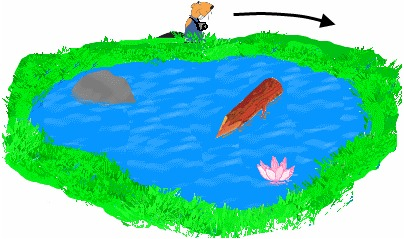
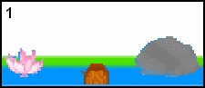
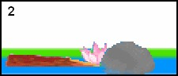
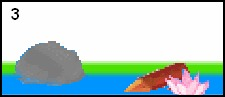
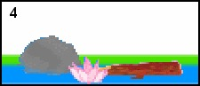

|
Castor se promène autour d'un étang. Il commence sa promenade à l'endroit où vous le voyez sur le dessin et part dans la direction de la flèche. |
 |
Castor prend quatre photographies au cours de sa promenade.
|  |  |
|  |  |
Dans quel ordre a-t-il pris les photographies ?
La réponse C est correcte.
Les photos ont été prises lorsque Castor se trouvait à peu près aux positions indiquées sur l'image ci-contre.
On dit souvent : "une image vaut un millier de mots". Lorsque l'on dispose de plusieurs images liées, leur analyse permet d'obtenir des résultats très intéressants. À l'heure actuelle, les ordinateurs sont très loins de pouvoir "comprendre" une image aussi bien que les êtres humains, mais de très diverses disciplines de l'informatique s'attaquent avec succès à développer des aspects très spécifiques de la vision par ordinateur, avec des applications destinées à la robotique, aux caméras de surveillance, à la reconaissance de visages, etc. Des outils de vision par ordinateur plus intelligents permettraient toutes sortes d'applications très utiles, mais rendraient aussi possibles des utilisations moins désirables.